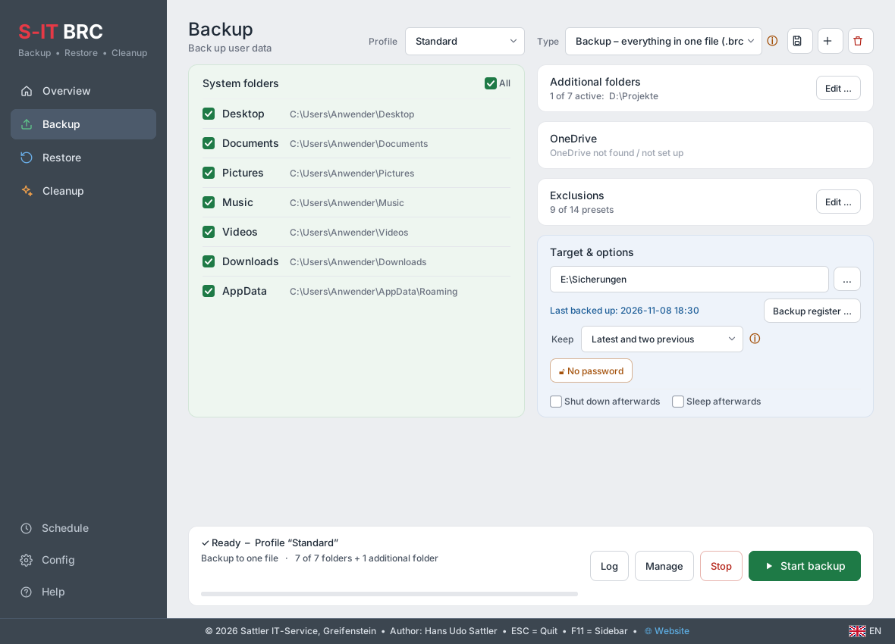
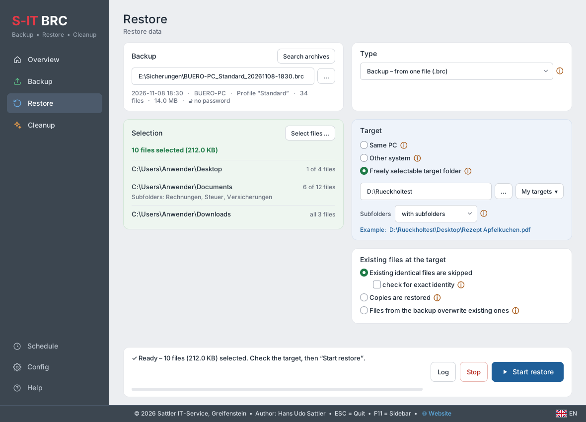
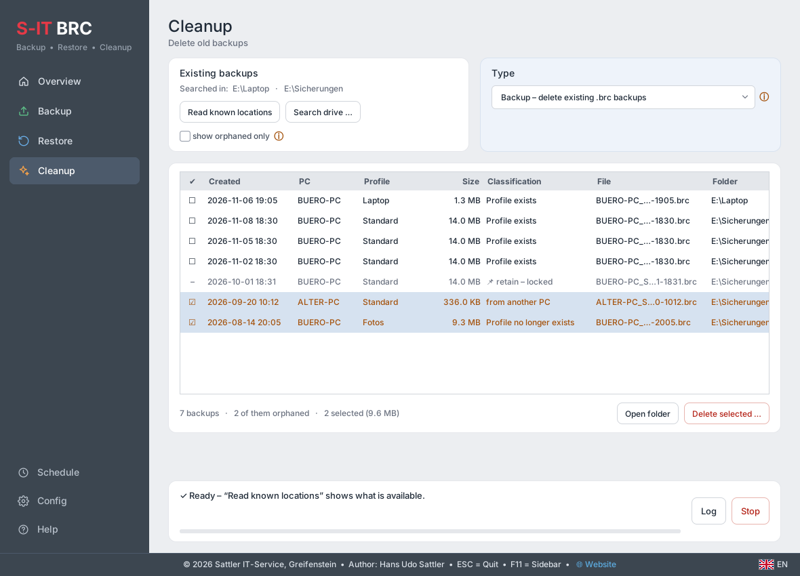

Two types of backup NEW
For each profile you choose the type: the file backup copies your files individually into folders at the target. The Backup (.brc) stores everything in a single file – inside, a standard ZIP archive.
Encryption NEW
A Backup (.brc) can be encrypted with a password (AES-256). The names of the files and folders then cannot be read from outside either. There is no back door.
Versions NEW
For each profile you specify how many backups are kept. An older one is removed only when the new one has been written completely. Individual backups can be marked to be retained.
Verifying backups NEW
The “Manage” window shows the backups of a profile. “Verify” reads a backup completely and compares every file with its checksum.
Restoring individual files NEW
From a Backup (.brc) you restore individual folders or files without unpacking the whole backup – to the original location, to another system or to a freely selectable target folder.
Backup register NEW
BRC keeps a register of when a backup was made, with which profile and to where. The search in it finds files by their name in all backups that are currently reachable.
OneDrive NEW
Folders that Windows has redirected to OneDrive are marked. Files that exist only online in the cloud are downloaded by BRC for the backup; afterwards the space is released again.
Scheduling
Backs up daily, weekly, monthly or at intervals – silently in the background if you wish, for both types of backup. Missed runs are made up for, and runs due at the same time are queued.
Progress at a glance NEW
For large files a second bar shows the progress of the current file. Total amount, speed and remaining time are shown as well – also in the window of a scheduled backup.
New interface NEW
A sidebar leads to Overview, Backup, Restore and Cleanup. Five colour schemes from light to dark and a display size from 90 to 200 % are available.
Eight languages NEW
Program and help in Deutsch, English, Français, Español, Nederlands, Italiano, Polski and Hrvatski. The pictures in the help show the program in the respective language.
Help and manual NEW
The help begins with the workflow in seven steps; the page “S-IT-BRC – made simple” describes backing up to a USB stick. A manual in German and in English is included as a PDF.
Cleanup
Keeps the file backup lean: outdated files are moved into an archive folder, with a simulation before the real run. For Backups (.brc), Cleanup shows your backups and removes those you no longer need.
Profiles, additional folders, exclusions
All settings of a backup are stored in a named profile – with up to seven additional folders and its own exclusion list for temp folders, caches and the like.
Log
Every operation is logged, and the log can be opened directly from the program. Before each run a confirmation states in full sentences what is going to happen.



The current version and the changelog can be found in the release area on GitHub. Help and manual are included in the program.
| Component | Requirement |
|---|---|
| Operating system | Windows 10 / Windows 11 (64-bit) |
| Rights | The setup requests administrator rights |
| Scope of delivery | Setup, uninstaller, help in eight languages, manual as a PDF (German and English) |
- Backup to one file (.brc): a second type of backup alongside the file backup, selectable for each profile; inside, a standard ZIP archive
- Encryption: password with AES-256; the names of the files and folders cannot be read from outside either
- Versions: specify for each profile how many backups are kept; mark individual ones to be retained
- Manage and Verify: read backups completely and compare every file with its checksum
- Restore: bring back individual folders or files from a Backup (.brc) without unpacking the whole backup
- Backup register: overview of all backups with a search by file name
- OneDrive: files that exist only online in the cloud are downloaded for the backup and released again afterwards
- Scheduling: for both types of backup, now also “Monthly”; second bar for the progress of large files
- New interface: sidebar, Overview, five colour schemes, display size 90 to 200 %
- Eight languages: program and help with pictures in the respective language; manual as a PDF in German and in English
- Installation: one setup for installation and portable use; settings from version 3 are taken over
All details and the earlier versions are in the complete changelog (English and German).
The S-IT tools are developed and maintained free of charge. I would be pleased about a small contribution:
PayPal – tool-entwicklung@sattler-it.de